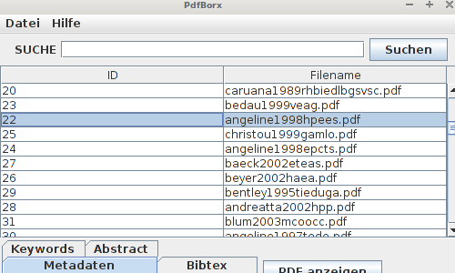
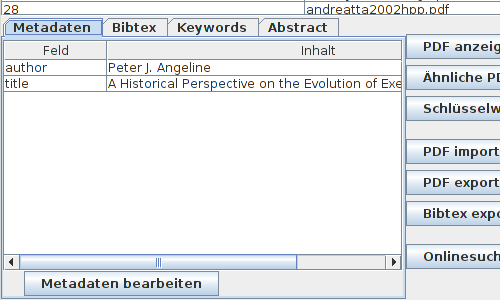
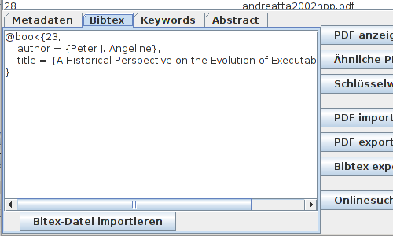
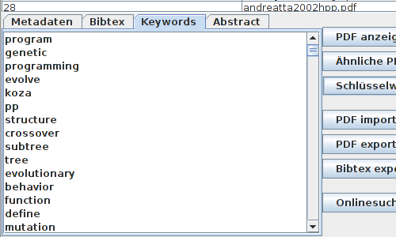
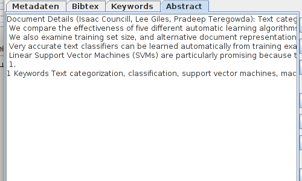

Importierte PDF-Dokumente werden ihnen nach der Verarbeitung in der mittleren Tabelle mit ID und Dateinamen angezeigt. Klicken sie einen der Einträge an um sich alle Informationen die es zu dem Dokument gibt im Unteren Bereich des Programmes anzeigen zu lassen

Im folgenden wird auf die einzelnen Karteikarten, und deren Funktionen, zu den PDF-Informationen eingegangen

Unter Metadaten werden alle Einträge angezeigt welche zu den folgenden Feldern gefunden wurden:
ADRESS,
ANNOTE,
AUTHOR,
BOOKTITLE,
CHAPTER,
CROSSREF,
EDITION,
EDITOR,
HOWPUBLISHED,
INSTITUTION,
JOURNAL,
KEY,
MONTH,
NOTE,
NUMBER,
ORGANIZATION,
PAGES,
PUBLISHER,
SCHOOL,
SERIES,
TITLE,
TYPE,
VOLUME,
YEAR

Unter Bibtex werden Ihnen die gefundenen Metadaten als fertiger Bibtex angezeigt.

Die Liste mit den Schlüsselwörtern zeigt ihnen alle gefunden Stammformen von den für das Dokument spezifischen, oft genutzen Wörtern an.

Hier können sie sich zum ausgewählten Dokument das Abstract ansehen
[zurück]